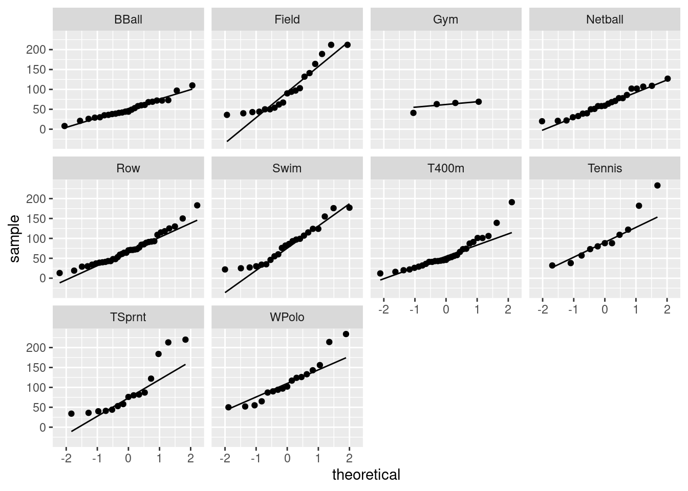

Chapter 29 Analysis of covariance
Packages for this chapter:
29.1 Productivity and research-and-development
An economist compiled data on productivity improvements for a sample of companies that produce electronic equipment. The companies were classified according to their expenditures on research and development in the last three years (classified as low, moderate, high). Productivity improvement is measured on a 0–100 scale, with most values being between 0 and 10. The economist also thought that last year’s productivity improvement would be relevant, and so recorded this as well.
The data set can be found at link.
Feel free to use “R&D” as an abbreviation for “research and development” in your answers below.
Read in and display at least some of the data.
Plot productivity improvement for this year against last year, identifying the points by the level of research-and-development expenditure. On your plot, add regression lines for each expenditure group.
* Look at your graph of the previous part. Do you think that (i) knowing last year’s productivity improvement tells you something about this year’s, (ii) the level of expenditure on research-and-development has an impact on this year’s productivity improvement, (iii) there is an interaction effect between R&D expenditure and last year’s productivity increase on this year’s productivity increase? In each case, explain briefly.
Fit an analysis of covariance model without interaction. Run the results through
drop1withtest="F"(theFmust be in quotes). What do you conclude?Now look at the
summaryof your analysis of covariance model. Explain briefly how each of the last three numbers in theEstimatecolumn are consistent with your graph.Add an interaction between
lastandexpenditureto your analysis of covariance model. Test it for significance usingdrop1. In the light of what you have seen, does this surprise you? Explain briefly why you are or are not surprised.
29.2 Treating leprosy
Two drugs are being tested in the treatment of leprosy. These are labelled A and D. There is also a control drug, labelled F. The response variable is a post-treatment score of leprosy bacilli (measured at six different sites on each patient). A lower score is better.
Thus far, we have a standard one-way analysis of variance. But the
researchers wanted greater precision in assessing the effects (if any)
of the drugs, so they also measured a pre-treatment score of leprosy
bacilli. The data are in the file
link. The
pre-treatment and post-treatment scores are labelled pre and
post respectively.
Read in the data and check that you have apparently the right thing.
* Make a scatterplot of post-treatment score against pre-treatment score, with the points for each drug drawn in a different colour.
Does it appear that including the pre-treatment score was a good idea? Explain briefly.
What about this dataset suggests that analysis of covariance is a method worth trying?
Fit an analysis of covariance model to predict post-treatment score. Include an interaction between your explanatory variables. (You don’t need to look at the output from the model.)
Pass your fitted model of the last part into
drop1. Is the interaction term significant?Fit a model without the interaction. Is this a sensible thing to do (in addition, that is, to the fact that I just asked you to do it)?
Take a look at the
summaryof your preferred model. Is there a significant effect of pre-treatment score? Describe the effects of the different drugs on the post-treatment score. (Don’t do any tests fordrug.) Does your comparison of drugs make sense?Obtain predicted values for
postfor each of the three drugs atprescores 5, 12 and 20. To do this, obtain a new data frame that has all 9 combinations of drugs andprescores, and then feed this intopredictusing your preferred model.19 Analysis of covariance is just a linear model, so predict works the same here as in regression.Now, plot the data with the fitted lines on. You’ll need to do the trick of using the original data frame (and plot the points), and the data frame of predictions (and join those points with lines).
Are the lines on your plot parallel, with the same slopes? Is this what you would expect? Explain briefly.
My solutions follow:
29.3 Productivity and research-and-development
An economist compiled data on productivity improvements for a sample of companies that produce electronic equipment. The companies were classified according to their expenditures on research and development in the last three years (classified as low, moderate, high). Productivity improvement is measured on a 0–100 scale, with most values being between 0 and 10. The economist also thought that last year’s productivity improvement would be relevant, and so recorded this as well.
The data set can be found at link.
Feel free to use “R&D” as an abbreviation for “research and development” in your answers below.
- Read in and display at least some of the data.
Solution
The data values are separated by one space, so let’s use
read_delim and display whatever displays (probably the
first ten lines):
my_url <- "http://ritsokiguess.site/datafiles/productivity.txt"
productivity <- read_delim(my_url, " ")##
## ── Column specification ──────────────────────────────────────────────────────────────────────────────────────────────────────────────────────────────────────────────────────────────────────
## cols(
## expenditure = col_character(),
## improvement = col_double(),
## last = col_double()
## )There is a column classifying expenditure along with numerical values
for productivity improvement for this year and last year (labelled
improvement and last), so it looks as if we are
good.
You are free to give the data frame a shorter name to make it easier to keep typing it!
Extra: those expenditure levels (that are currently text) will get sorted into alphabetical order unless we stop them. They are actually in the right order in the data file, so maybe we should turn them into a factor (with the levels in the right order) now:
If you don’t do this, your answers below will be different from mine. Probably not in any kind of consequential way, but different nonetheless.
\(\blacksquare\)
- Plot productivity improvement for this year against last year, identifying the points by the level of research-and-development expenditure. On your plot, add regression lines for each expenditure group.
Solution
Two quantitative and one categorical variable, so plot the
categorical variable using colour (or shape etc., if you
know about that, but colour is the most obvious thing):
ggplot(productivity, aes(x = last, y = improvement, colour = expenditure)) +
geom_point() + geom_smooth(method = "lm", se = F)## `geom_smooth()` using formula 'y ~ x'
The se=F is optional; no problem if you don’t include it. (If
you miss it out, you’ll get those CI-of-mean-response grey envelopes
around each line.)
\(\blacksquare\)
- * Look at your graph of the previous part. Do you think that (i) knowing last year’s productivity improvement tells you something about this year’s, (ii) the level of expenditure on research-and-development has an impact on this year’s productivity improvement, (iii) there is an interaction effect between R&D expenditure and last year’s productivity increase on this year’s productivity increase? In each case, explain briefly.
Solution
Taking the three things in turn: (i) knowing about last year’s productivity increase definitely helps, because the three trends definitely go up (extra: and are pretty much linear). (ii) knowing about the level of expenditure helps because the coloured trends are in different places (low on the left and high on the right, whatever colours they are for you). (iii) I am guessing there is no interaction because the three lines look more or less parallel (a judgement call: if you think that there will be an interaction because you think the lines are definitely not “approximately parallel” and therefore there is an interaction, that’s OK too).
\(\blacksquare\)
- Fit an analysis of covariance model without interaction. Run
the results through
drop1withtest="F"(theFmust be in quotes). What do you conclude?
Solution
This looks exactly like a regression with a categorical variable, and is. Just the two main effects, thus:
improvement.1 <- lm(improvement ~ last + expenditure, data = productivity)
drop1(improvement.1, test = "F")Both the P-values are small, so there is strong evidence of an effect on this year’s productivity increase of last year’s productivity increase and the level of R&D expenditure.
\(\blacksquare\)
- Now look at the
summaryof your analysis of covariance model. Explain briefly how each of the last three numbers in theEstimatecolumn are consistent with your graph.
Solution
To begin:
##
## Call:
## lm(formula = improvement ~ last + expenditure, data = productivity)
##
## Residuals:
## Min 1Q Median 3Q Max
## -0.52812 -0.16385 -0.00046 0.08379 0.45730
##
## Coefficients:
## Estimate Std. Error t value Pr(>|t|)
## (Intercept) -1.00804 0.50991 -1.977 0.0602 .
## last 1.11417 0.07116 15.658 9.27e-14 ***
## expendituremoderate -1.83316 0.22372 -8.194 2.84e-08 ***
## expenditurehigh -3.14338 0.37115 -8.469 1.59e-08 ***
## ---
## Signif. codes: 0 '***' 0.001 '**' 0.01 '*' 0.05 '.' 0.1 ' ' 1
##
## Residual standard error: 0.2393 on 23 degrees of freedom
## Multiple R-squared: 0.9629, Adjusted R-squared: 0.958
## F-statistic: 198.8 on 3 and 23 DF, p-value: < 2.2e-16The last three numbers in the Estimate column are slopes for the
quantitative variable last and changes in intercept for the
levels of the categorical variable expenditure. Specifically:
the slope for
lastis positive, so if last year’s productivity increase is higher, this year’s will be higher as well. This matches the upward trends within eachexpendituregroup on the graph.expenditureis categorical, so everything is measured relative to the baseline. Mine islow, but yours is probablyhigh.My two estimates for
expenditurehighandmoderateare both negative, so when expenditure on R&D is high or moderate, the productivity increase will be lower this year (for the same productivity increase last year). Going back to the graph, if you extend the lines formoderateandhighto a middlinglastvalue of something like 10, the productivity increase this year will be higher whenexpenditureis low or moderate then when it is high, which is consistent with those slopes both being positive. (You don’t need to go to this detail, but you should say something convincing from the graph about how this year’s productivity increase is higher if R&D expenditure is low or moderate compared to high.)
Extra: the graph also indicates that the higher the
expenditure on R&D is, the more likely last year’s
productivity improvement will be higher also. So in practice we are
not likely to be comparing actual companies with different
expenditure but the same last. Nonetheless, what I
said is what those positive coefficients for expenditure
actually mean. Be careful not to say that low is lowest
because it’s on the left; it’s whether it’s higher or lower than the
others at the same value of last that matters.
Extra extra: I asked you to do the test from drop1 because
there are three levels of expenditure (rather than just two),
and the summary output only gives you a comparison with the
baseline level, rather than comparing all three
levels. I prefer to do the right test (using drop1) first,
and then use summary to interpret what I have, or at least
the parts of it that are significant.
Extra extra extra: you would (or at least I would) expect a larger productivity increase to go with a larger expenditure on R&D, but that’s not how it worked out. This is one of those cases where all else isn’t really equal.
\(\blacksquare\)
- Add an interaction between
lastandexpenditureto your analysis of covariance model. Test it for significance usingdrop1. In the light of what you have seen, does this surprise you? Explain briefly why you are or are not surprised.
Solution
I like update for this (writing out the whole model is an
alternative):
Yes, I too forgot the test="F" the first time.
The interaction term is actually significant, at least at \(\alpha=0.05\). This is a surprise to me, because I thought those lines on the graph were pretty close to parallel, so I wasn’t expecting to see a significant interaction. (What I want from you here is to look back at your answer to (iii) in part (here), and to say how this small P-value is consistent or inconsistent with whatever you said there. If you said that the lines weren’t parallel enough, then this significant interaction should not be a surprise to you.)
That’s all I’m after. I don’t need you to speculate on why the test came out significant. I will, in a moment, but you don’t need to.
Extra: I didn’t expect the interaction to come out significant, but the P-value is not nearly so small as the ones we had before. I guess the explanation for this is that the data cluster pretty tightly about the lines in the graph, so that even a small difference in slopes can be signficant. You might argue that my red line is not quite as steep as the others, but the difference does look very small.
Let’s take a look at the summary for my interaction model:
##
## Call:
## lm(formula = improvement ~ last + expenditure + last:expenditure,
## data = productivity)
##
## Residuals:
## Min 1Q Median 3Q Max
## -0.32417 -0.14885 -0.02465 0.13739 0.55556
##
## Coefficients:
## Estimate Std. Error t value Pr(>|t|)
## (Intercept) 0.27827 0.64967 0.428 0.67278
## last 0.93243 0.09124 10.220 1.32e-09 ***
## expendituremoderate -4.50268 1.25959 -3.575 0.00179 **
## expenditurehigh -7.14795 1.91223 -3.738 0.00121 **
## last:expendituremoderate 0.32217 0.14243 2.262 0.03444 *
## last:expenditurehigh 0.40858 0.17549 2.328 0.02997 *
## ---
## Signif. codes: 0 '***' 0.001 '**' 0.01 '*' 0.05 '.' 0.1 ' ' 1
##
## Residual standard error: 0.2135 on 21 degrees of freedom
## Multiple R-squared: 0.973, Adjusted R-squared: 0.9666
## F-statistic: 151.5 on 5 and 21 DF, p-value: 9.763e-16The last two Estimates, the ones beginning with last:, came
from the interaction. Once again low is my baseline. These
say how the slopes for last for the other groups
differ from the slopes for last for low
expenditure. (Yes, this is confusing. Read it again until you get it.)
The biggest-size difference in slopes, about \(0.40\), is between low expenditure and high expenditure. This says that the line for high expenditure is this much more steep than the line for low expenditure. That’s where the non-parallelism is on the graph, such as it is. A small but significant difference in slopes. You can tell that the effect is small by looking in the Estimate column; those changes in slopes, \(0.40\) and \(0.32\), are the smallest things in size out of everything in that column.
Having seen this, you now realize that I did this question wrong (or, at least, I led you through it wrong). The right way to do this would have been to fit the interaction model first, see that it is significant, and then done some predictions to assess the effects of things:
lasts <- c(7, 9, 11)
expenditures <- c("low", "moderate", "high")
new <- crossing(last = lasts, expenditure = expenditures)
new(oh, how I wish I’d given those variables shorter names),20 The expenditure levels have come out in alphabetical order again. and then:
The effect is more or less as we described it before: as last
goes up (for fixed expenditure), the predicted productivity
improvements for this year go up, and as expenditure level
goes up, the predictions go down. But the rates at which they
go up or down are different, which is the significant interaction
coming into play. Having said that, they are not very different, so I
cheated and pretended the interaction was not significant (or that I
was using \(\alpha=0.01\)), so that you would have something easier to
interpret. Qualitatively, the story is the same either way, because
the sizes of the interaction terms are small compared to the
others. So, even though I cheated, you ended up with more or less the
same conclusions doing it the way I asked you to do it, or doing it
the way I just did it.
\(\blacksquare\)
29.4 Treating leprosy
Two drugs are being tested in the treatment of leprosy. These are labelled A and D. There is also a control drug, labelled F. The response variable is a post-treatment score of leprosy bacilli (measured at six different sites on each patient). A lower score is better.
Thus far, we have a standard one-way analysis of variance. But the
researchers wanted greater precision in assessing the effects (if any)
of the drugs, so they also measured a pre-treatment score of leprosy
bacilli. The data are in the file
link. The
pre-treatment and post-treatment scores are labelled pre and
post respectively.
- Read in the data and check that you have apparently the right thing.
Solution
Take a look at the data file. The values have multiple spaces
between them, but they are aligned with each other and the
column headings, so read_table is the thing:
##
## ── Column specification ──────────────────────────────────────────────────────────────────────────────────────────────────────────────────────────────────────────────────────────────────────
## cols(
## drug = col_character(),
## pre = col_double(),
## post = col_double()
## )Call it what you like.
That looks good, with variables of the right names.
\(\blacksquare\)
- * Make a scatterplot of post-treatment score against pre-treatment score, with the points for each drug drawn in a different colour.
Solution
This is the kind of thing that ggplot does without
batting an eyelid:

\(\blacksquare\)
- Does it appear that including the pre-treatment score was a good idea? Explain briefly.
Solution
The overall trend on the scatterplot is that a higher pre
tends to go with a higher post, regardless of drug, so
including this information appears to be informative.
I personally suspect that there’s some fan-out happening on the
pre-post relationship, but I’m not planning to make you explore that.
\(\blacksquare\)
- What about this dataset suggests that analysis of covariance is a method worth trying?
Solution
The key is a mixture of categorical and quantitative explanatory
variables. Here we have a categorical variable drug and a
quantitative one pre.
If we had only one type of explanatory variable, we could do a
regression or an ANOVA as appropriate. But we don’t. In some ways,
it’s not worth making a fuss about the distinction, because
regressions and ANOVAs are all linear models anyway. But you may
see the term “analysis of covariance”, so it’s worth your while
to know what it’s about.
\(\blacksquare\)
- Fit an analysis of covariance model to predict post-treatment score. Include an interaction between your explanatory variables. (You don’t need to look at the output from the model.)
Solution
This is what you’d guess. lm handles the interaction
properly, even though pre is a quantitative variable.
I wanted to take a look, so I did:
##
## Call:
## lm(formula = post ~ pre * drug, data = lepro)
##
## Residuals:
## Min 1Q Median 3Q Max
## -6.225 -2.437 -0.586 1.126 8.775
##
## Coefficients:
## Estimate Std. Error t value Pr(>|t|)
## (Intercept) -1.6306 2.9455 -0.554 0.5850
## pre 0.7452 0.2849 2.616 0.0152 *
## drugD -2.9549 4.1246 -0.716 0.4806
## drugF -1.4780 5.4678 -0.270 0.7892
## pre:drugD 0.3233 0.3846 0.841 0.4089
## pre:drugF 0.4492 0.4458 1.008 0.3236
## ---
## Signif. codes: 0 '***' 0.001 '**' 0.01 '*' 0.05 '.' 0.1 ' ' 1
##
## Residual standard error: 4.07 on 24 degrees of freedom
## Multiple R-squared: 0.6915, Adjusted R-squared: 0.6272
## F-statistic: 10.76 on 5 and 24 DF, p-value: 1.63e-05For testing the interaction, there are two slope coefficients
that should be zero if there is no interaction. So we have to test
this with drop1, which is next.
\(\blacksquare\)
- Pass your fitted model of the last part into
drop1. Is the interaction term significant?
Solution
Just this:
There is only a test for the interaction term because you can’t take out the main effects until you’ve taken out the interaction.
The P-value for the interaction is very large (0.5606) so it is nowhere near significant. We can drop the interaction.
\(\blacksquare\)
- Fit a model without the interaction. Is this a sensible thing to do (in addition, that is, to the fact that I just asked you to do it)?
Solution
Change the * to a +:
Or use update (not much in it, here):
We just said that the interaction could come out, since it wasn’t significant, so this is exactly the model that we should be fitting.
\(\blacksquare\)
- Take a look at the
summaryof your preferred model. Is there a significant effect of pre-treatment score? Describe the effects of the different drugs on the post-treatment score. (Don’t do any tests fordrug.) Does your comparison of drugs make sense?
Solution
Mine was the no-interaction model lepro.2:
##
## Call:
## lm(formula = post ~ pre + drug, data = lepro)
##
## Residuals:
## Min 1Q Median 3Q Max
## -6.4115 -2.3891 -0.5711 1.7237 8.5885
##
## Coefficients:
## Estimate Std. Error t value Pr(>|t|)
## (Intercept) -3.8808 1.9862 -1.954 0.0616 .
## pre 0.9872 0.1645 6.001 2.45e-06 ***
## drugD 0.1090 1.7951 0.061 0.9521
## drugF 3.4461 1.8868 1.826 0.0793 .
## ---
## Signif. codes: 0 '***' 0.001 '**' 0.01 '*' 0.05 '.' 0.1 ' ' 1
##
## Residual standard error: 4.006 on 26 degrees of freedom
## Multiple R-squared: 0.6763, Adjusted R-squared: 0.6389
## F-statistic: 18.1 on 3 and 26 DF, p-value: 1.501e-06The pre-treatment term is definitely significant, with a P-value of 0.0000025. So pre-treatment score definitely has an impact on post-treatment score.
I didn’t ask you to test for significance of drugs. I just wanted you to assess their coefficients. Drug A is being used as the baseline, so its coefficient is zero. Drug D has a slightly positive coefficient (0.109) so its average bacilli score is slightly higher (for any pre-treatment score) than for drug A. Drug F, which was the placebo, has a slope of 3.446, so its average bacilli score is a fair bit higher than for either of the other drugs. This makes sense because a higher score is worse, and the two “real” drugs are both better than the fake one.
Whether there is a real drug difference, I didn’t ask you to assess,
but you could do it by drop1 again, this way:
This is actually not significant.21 This is why I didn’t ask you to test this, since it would have confused the story.
This is one of those cases where the non-significant drug has
a slightly bigger AIC than <none>, so drop1
considers it best to leave it in the model.
\(\blacksquare\)
- Obtain predicted values for
postfor each of the three drugs atprescores 5, 12 and 20. To do this, obtain a new data frame that has all 9 combinations of drugs andprescores, and then feed this intopredictusing your preferred model.22 Analysis of covariance is just a linear model, so predict works the same here as in regression.
Solution
First, make the new data frame for predicting from, using
crossing. I’m doing this in small steps for clarity:
first, I define all the drugs and pre values, and then I
feed them into crossing:
drugs <- c("A", "D", "F")
pres <- c(5, 12, 20)
lepro.new <- crossing(drug = drugs, pre = pres)
lepro.newThe names of the columns in the new data frame have to be
exactly drug and pre. Anything else, and
predict won’t work.
Now I obtain the predictions, from my best model lepro.2. I
don’t need intervals or anything like that:
## 1 2 3 4 5 6 7 8 9
## 1.055110 7.965396 15.862867 1.164081 8.074368 15.971838 4.501248 11.411535 19.309005only it would be easier to see the predictions side by side with the values they are predictions for:
I gave this a name in case I feel like using it again later.
\(\blacksquare\)
- Now, plot the data with the fitted lines on. You’ll need to do the trick of using the original data frame (and plot the points), and the data frame of predictions (and join those points with lines).
Solution
ggplot(lepro, aes(x = pre, y = post, colour = drug)) + geom_point() +
geom_line(data = allpreds, aes(y = preds, linetype = drug))
Inside the aes for the geom_line, I only have to
specify the things that have changed, so that the x
(pre) and the colour (drug) are
“inherited” unchanged from the first aes.
geom_line has the aes as its default first argument,
so I have to specify data= by name.
The linetype= is really overkill, but I just wanted to show
you that you can distinguish the drugs by line type as
well.23 The line types show up in the legend too, though they’re not so easy to see.
\(\blacksquare\)
- Are the lines on your plot parallel, with the same slopes? Is this what you would expect? Explain briefly.
Solution
My lines are parallel. This is exactly what I would expect, since my best model has no interaction, and the interaction is what would make the lines not be parallel. If your best model did have the interaction term still in it, your predictions would have been these:
The slopes for each drug are no longer the same (because nothing is forcing them to be the same). For example, if you compare drug A at pre score 5 and 12, it goes up by 5.2, while drug D at the same pre scores goes up by 7.5.
The ggplot in this case is actually a lot easier than the
other ggplot, because the lines are now just the regression
lines for each group. So geom_smooth will get them:
## `geom_smooth()` using formula 'y ~ x'
The grey intervals are a bit confusing.24 You can get rid of them by saying se=F inside the geom-smooth, as normal. They are
confidence intervals for the mean post score (as we did for regression
early on in the course). But I left them there to show that they
overlap substantially and thus that those slopes are not
“really different”. That’s the lack of interaction. There is, as you see, a
substantial scatter in the points that would make it very difficult to
prove that those three slopes are really different.
\(\blacksquare\)